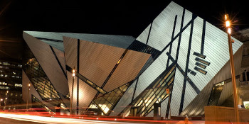
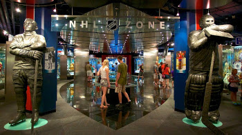

O Royal Ontario Museum em Toronto é o maior museu de culturas mundiais e história natural do Canadá e um dos maiores da América Latina. O seu acervo é super completo, com exposições sobre arte, arqueologia e ciências. Com uma design super moderno, todo espelhado em sua parte exterior, o museu tem mais de 100 anos de história, sendo inaugurado em 914. Entre as exposições, a caverna dos morcegos, o Tiranossauro rex e também uma das suas melhores coleções, composta por tesouros da Terra, como meteoritos, rochas, minerais e pedras preciosas. Uma dica é visitar no fim de semana, depois das 13h, que é quando está mais vazio. Um dos principais museus em Toronto.
Localizada na Dundas St. W., próxima a estação St. Patrick do metro, a Art Gallery of Ontario (AGO) é um museu em Toronto imperdível para os apaixonados por arte. Com as melhores exposições da cidade, o acervo conta com mais de 80 mil obras, que vão desde antiguidades do ano 100 d.C. até obras contemporâneas. O destaque fica com o conjunto de obras europeias, que inclui trabalhos de Auguste Rodin, Claude Monet, Edgar Degas, Paul Cézanne, Vincent van Gogh e Pablo Picasso. É um dos mais interessantes pontos turísticos em Toronto, para quem gosta de arte. Uma dica é visitar a AGO as quartas-feiras, pois a entrada gratuita das 6pm até as 8:30, excluindo exposições especiais. Assim como na lista de o que fazer em Nova Iorque, em Toronto tem muita opção legal de museu e galerias de arte.
O Hockey Hall of Fame é um museu em Toronto para quem gosta de esporte. O hóquei no gelo é muito famoso no Canadá e o estabelecimento dedica-se a ele e aos seus principais jogadores. Como o esporte não é muito famoso no Brasil, vale a visita para conhecê-lo. Suas instalações são compostas por exposições sobre jogadores, clubes, registros da National Hockey League (NHL), troféus da NHL, entre outros. É um dos principais museus em Toronto para os canadenses, por serem fanáticos por esse esporte.
